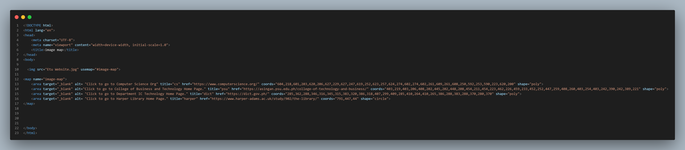

Midterm Task 3: Image Maps
Instructions/Requirements
In this exercise, you will create a web navigation tool from an existing image using image maps. First, the image you will be using is a portion of the ETSU campus map that you can find on the ETSU web site. The portion I want you to use is the image shown below.
- First, you need to download a copy of the image so that you can do your editing from your local drive. To do this, place the mouse cursor on the image and press the right mouse button. In the small menu that appears, select the option "Save Picture As". From the window that appears, select the directory to which you wish to save the image.
- First, you need to download a copy of the image so that you can do your editing from your local drive. To do this, place the mouse cursor on the image and press the right mouse button. In the small menu that appears, select the option "Save Picture As". From the window that appears, select the directory to which you wish to save the image.
- You can use any graphics program to find the coordinates of each item within the image that you wish to use for a clickable area. You may use the ff: link to properly map the coordinates. You may use an image mapping software to accurately plot the coordinates: i.e. //www.image-map.net/ Microsoft Paint will work just fine as well. In Paint, the coordinates of the current cursor position will appear in the lower right corner of the window. You can also find the dimensions of the image itself by selecting the menu item "Image" and then the option "Attributes".
- Paint can also be used to determine the coordinates of the shapes you are going to make into links on your image map. Using the mouse cursor in your graphics program, determine your coordinates to fit as closely to the item as you can.
- For this particular Task, create an image map that assigns four links to shapes within
the image you downloaded. The links should be made from the four buildings in the
map that are numbered. The links and their associated alternate text are as follows:
- Link = https://www.computerscience.org/
alt text = "Click to go to Computer Science Org” - Link = //asingan.psu.edu.ph/college-of-technology-and-business/
alt text = "Click to go to College of Business and Technology Home Page." - Link = https://dict.gov.ph/
alt text = "Click to go to Department IC Technology Home Page." - Link = https://www.harper-adams.ac.uk/study/902/the-library/
alt text = "Click to go to Harper Library Home Page."
- Link = https://www.computerscience.org/
- Submit and post the file in your portfolio
Output

Codesnap
